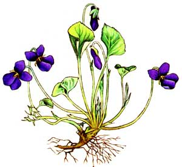

Mother's Herb Garden: Sweet Violet
This common flower can be used as both food and medicine.
By the Mother Earth News editors
March/April 1984
Lately, more and more people have begun to understand just how limited, in both variety and nutritional value, our "modern" diets have become. This realization has sparked a new and widespread interest in the culinary and therapeutic uses of herbs - those plants which, although not well-known today, were honored "guests" on the dinner tables and in the medicine chests of our grandparents' homes. In this regular feature, we'll examine the availability, cultivation and benefits of our "forgotten" vegetable foods and remedies - and, we hope, help prevent the loss of yet another bit of ancestral lore.
There is considerably more to the common sweet violet (Viola odorata) than meets the eye, although this hardy little perennial with exquisite flowers and broad, heart-shaped leaves is certainly attractive - be it in the woods or in a shaded garden. However, it has also been used through the ages in medicinal preparations, culinary concoctions, perfumes, dyes and cosmetics.
The symbol of ancient Athens, the violet was believed to moderate anger, strengthen and comfort the heart, and promote refreshing sleep. Garlands of its blossoms worn around the heads of revelers were supposed to dispel wine fumes and prevent dizziness and headaches (chemical analysis of the plant reveals the presence of salicylic acid - the "raw material" for aspirin - and thus shows that the Greeks may have known whereof they spoke). The leaves, which have antiseptic properties, can be used in ointments or as poultices for bruises and, when made into a tea or syrup, have been taken for internal inflammations and coughs.
There are even reports of violet-leaf infusions having helped to allay the pain of throat cancer, and several actual cures have been claimed. (To make an infusion, pour 1 pint of boiling water over 2 1/2 ounces of fresh, clean leaves and allow the brew to steep overnight. Strain the liquid, which may then be drunk cold by the wineglass every 2 hours. To be effective, the infusion should be made fresh daily.)
Violet flowers are slightly laxative and are also a gentle expectorant, but at one time herbalists believed that the syrup of violets would cure almost everything from ague to pleurisy! (Syrup of violets can be made by pouring 2 1/2 pints of boiling water over 1 pound of flowers and steeping them overnight, straining the liquid, adding double its weight in sugar, and then cooking it -without letting it come to a boil - into syrup. The juice of half a lemon may be added for extra vitamin C and piquancy.) The roots and seeds of sweet violet are purgatives. Combined with vinegar, the roots can be used to make a liniment long recommended for spleen disorders and gout. The seeds are diuretic and are supposed to be a good corrective for gravel.
In addition to their medicinal uses, the flowers can be eaten in salads; crystallized as beautiful candies; added to vinegar to impart color and fragrance; made into a rare and delicate jelly; boiled, pressed, pounded, and mixed with milk, rice flour and sugar into a porridge; and even fermented to produce a sweet wine. Since the blue color is released by infusion, violets have been used to create delicate eyeshadows and fragrant, tinted skin lotions. (A curious feature of the infused color is its property of turning red when in contact with acid, and green when in contact with an alkali. Because of this reaction, it has been used as a substitute for litmus.)
Violets are fond of deep, humus-rich and slightly sandy soil, and prefer moist, shaded locations such as those found in open areas under trees. They are easily propagated from seed, cuttings or - more usually - by division of the creeping rhizome in spring or fall.
|
 THE MOTHER EARTH NEWS STAFF A violet by a mossy stone Half hidden from the eye! -Fair as a star, when only one Is shining in the sky. -William Wordsworth |
THE MOTHER EARTH NEWS STAFF Violet flowers added to vinegar impart color and fragrance. |
 THE MOTHER EARTH NEWS STAFF Violet flower jelly is a rare and delicate condiment. |